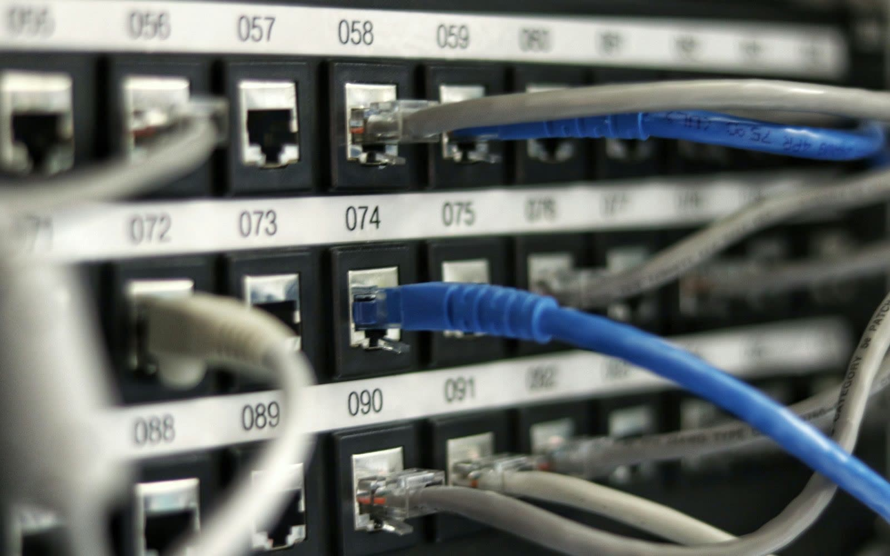
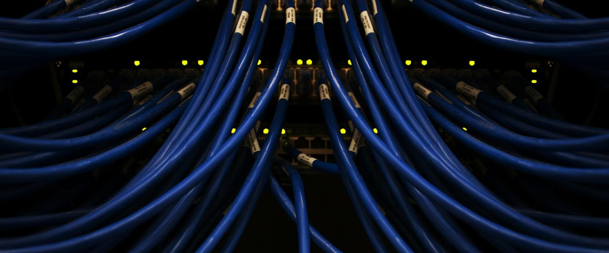

The challenge
Topology drifts away from the rack.
Every switch port, patch panel connection, uplink, firewall interface, router link, and cable path matters. A single undocumented cable change can create confusion during troubleshooting, audits, migrations, and outage response.
Diagrams are drawn once and updated later. Cable traces are documented during installation but forgotten during change windows. Switch telemetry may show port activity, but it does not always explain what the cable physically connects to. Over time, the network diagram and the rack reality stop matching. That gap creates risk.

What RackTrack does
The rack becomes proof.
Using a rack scan, RackTrack helps identify visible network devices, patch panels, ports, cables, labels, uplinks, and physical rack placement. This information can then be compared against expected topology, diagrams, CMDB records, and switch telemetry.
Instead of relying only on a diagram, teams get a verified physical layer view. Engineers move from assumption-based troubleshooting to evidence-based troubleshooting. Instead of asking, “Is the diagram correct?”, teams can ask, “What does the rack show right now?”
Example scenario
A cleaner core switch migration.
A network engineering team is preparing for a core switch migration across several data center rows. The official diagram shows redundant uplinks from each top-of-rack switch to the aggregation layer, but the team suspects some field changes were never updated in the documentation.
With RackTrack, the site team scans the racks and the detected rack information is compared with the expected topology. The team finds mismatched uplinks before the migration window begins. The result: fewer surprises, cleaner execution, and stronger confidence in the migration plan.

Instead of relying only on a diagram, teams get a verified physical layer view.
How RackTrack works
From scan to topology.
- CaptureA technician records or photographs the rack using a mobile device.
- DetectVisible network devices, patch panels, ports, cables, and labels are identified.
- CompareScanned data is compared against diagrams, CMDB, and switch telemetry.
- ValidateEngineers review mismatches and flag unclear or risky changes.
- UpdateValidated information supports updated documentation and cleaner records.
Business impact
RackTrack reduces the operational friction caused by unreliable network documentation. Engineers spend less time verifying physical connections and more time solving real problems. Leadership gains fewer outages, faster changes, and a network environment that can be trusted from diagram to rack.